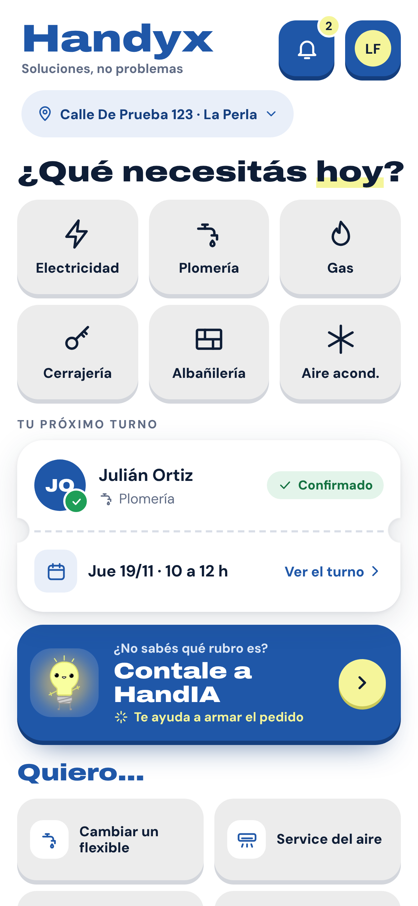

Nuestra visión


Que resolver un arreglo en casa sea simple, claro y justo, para quien lo pide y para quien lo hace.
Empezamos en Mar del Plata, con seis rubros y especialistas de cada barrio. Crecemos de a una ciudad, cuando la anterior funciona.
Handyx. Soluciones,
no problemas.
Conocé el proyecto

Te invitamos a recorrer Handyx
La landing, los cuatro dossiers y las demos de las aplicaciones, en un solo lugar.
landing.handyc.com/handyx
LandingBusiness & InvestmentCustomer AppProfessional AppOperations PortalPortafolio del fundador
ContactoIgnacio Gauna, fundador
Emailignaciogauna.developer@gmail.com
Teléfono223 667-4044
Weblanding.handyc.com
Soluciones,
no problemas.
Conectamos a quien necesita un arreglo en su casa con especialistas de su zona, con propuestas claras para elegir por calidad y por precio.
Diseño propuesto


Mar del Plata · 2026